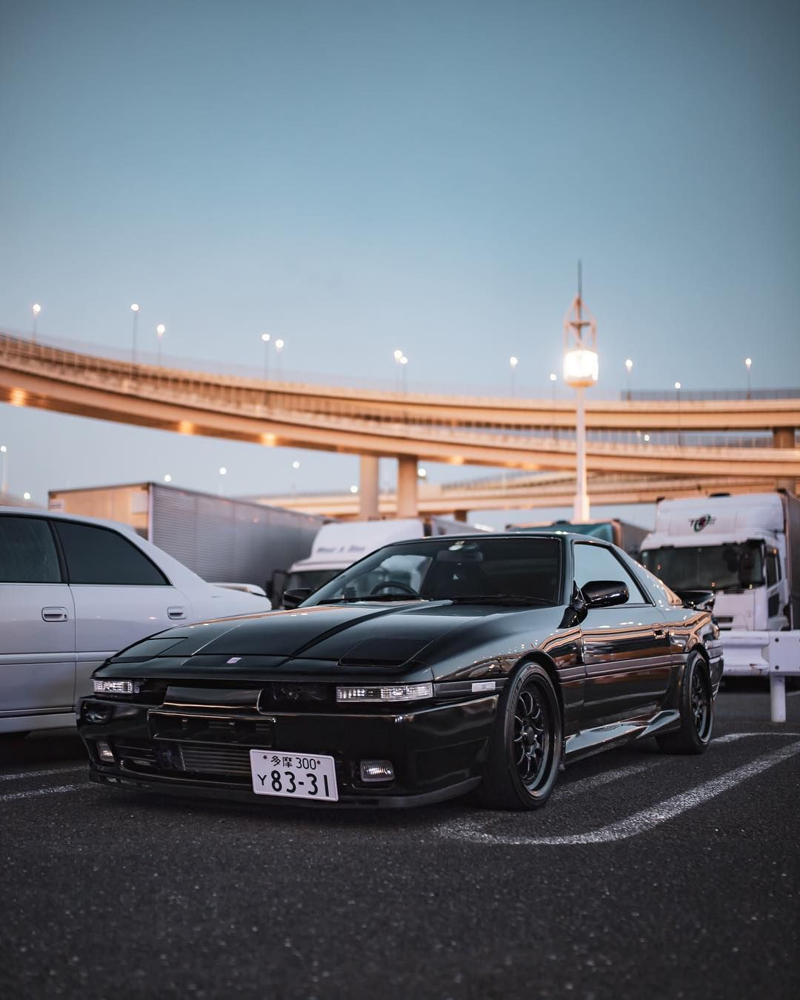
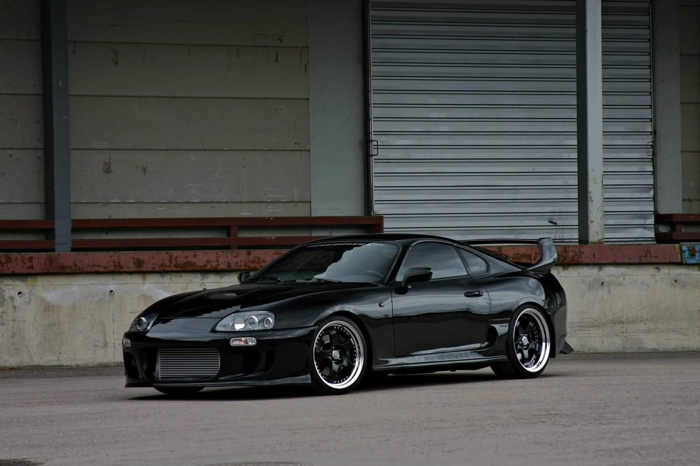
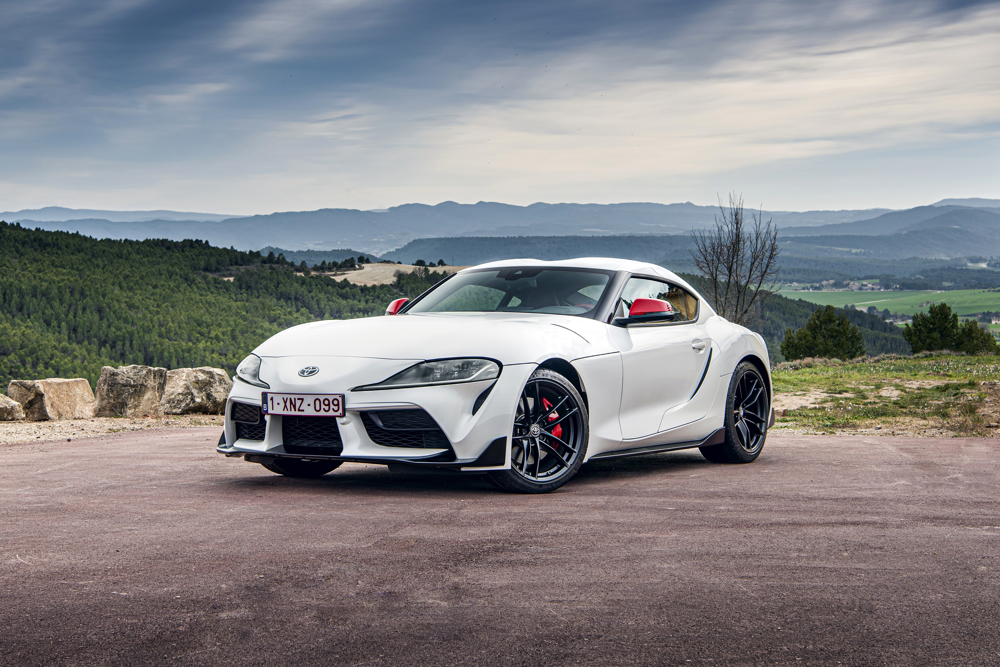

Inicio
Marcas
Nissan
Mitsubishi
Honda
Mazda
Ofertas
Donde encontrarnos
Registro
Sugerencias
Con un motor 6 en línea, y dos turbocompresores, generando
280CV de serie, el Toyota Supra MK3.
Toda una joya, a parte de rápido.
Por 25.000 euros

Para continuar, tenemos, nuevamente con un 6 en línea
y 2 turbocompresores pero esta vez generando 330CV,
el Toyota Supra MK4. Un deportivo legendario.
Por 50.000 euros.

Esta vez, con 4 cilindros en línea y un solo turbocompresor
generando un poco menos que su predecesor, 258CV,
el Toyota Supra MK5. Un poco odiado por los fans de Toyota,
pero amado por el mundo del motor.
Por 54.000 euros.
